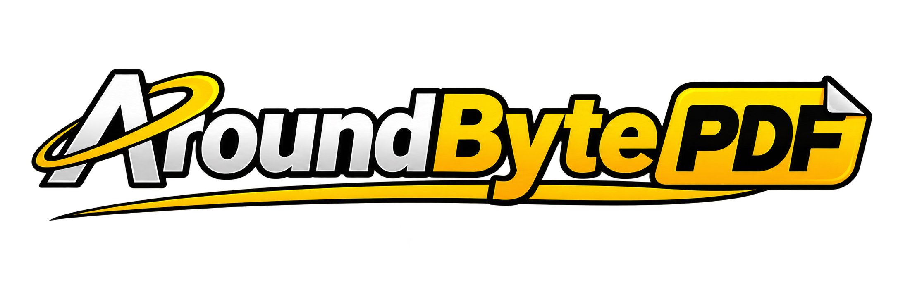

All PDF toolsEdit PDF metadata
Update document properties stored inside a PDF, including its title, author, subject, keywords and creator. This changes metadata, not the visible page content.
Open Edit PDF metadataHow to use this tool
- Choose a PDF, fill in the metadata fields you want to update, and save a new copy. Leave a field blank to clear that metadata value.
- Wait for processing to finish in your browser.
- Download the new PDF to your device.
Private PDF processing
AroundByte PDF processes supported files locally in your browser. Your PDF is not uploaded to an AroundByte server, and you do not need to create an account.
When is this useful?
Correcting document properties before sharing or archiving a PDF.
Frequently asked questions
Are my PDF files uploaded?
No. This tool processes the selected file in your browser on your device.
Do I need to install software?
No installation or account is required. Use a modern browser with JavaScript enabled.
Is the tool free?
Yes. This tool is available free of charge.